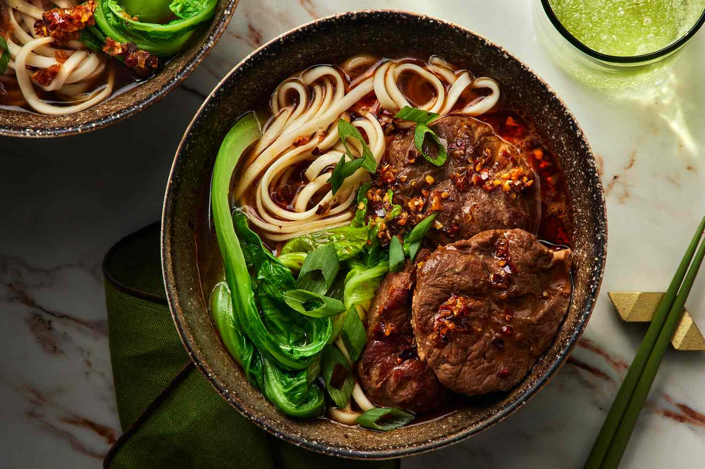

Odin Recipes

Beef Noodles Soup
Description
Beef Noodle Soup is a Taiwanese Dish served with noodles, vegitables, beef mixed in a flavourful broth.
Ingredients
- Beef
- Noodles
- Water
- Bok Choy
Steps
- Cut your boneless beef shank into 2-3 inch pieces then place the beef in boiling water for 10 minutes. Drain and rinse with water to clean.
- Prepare your vegetables. Quarter your onion, slice ginger, cut scallion whites into 3 inch segments, and crush garlic.
- In a pot or wok, heat up oil over medium-high heat. Add ginger, onions, scallion whites, garlic, and dried red chilies. Stir for 1 minute.
- Add sugar, chili bean sauce, tomato paste, soy sauce, dark soy sauce, and Shaoxing rice wine. Stir for 2 minute until bubbles.
- Add that mixture into your pressure cooker pot along with the drained beef, water, and aromatics. Add just enough water to cover the beef about 1½ – 2 liters.
- Pressure cook accordingly for 45 minutes or until beef is tender. If you don't have a pressure cooker, allow this to simmer covered for at least 3 hours until the beef is completely tender.
- Cook Shanghai thick noodle in boiling water for 2 minutes.
- Assemble your bowl with bok choy, tender beef, broth, and green onions.
- TIP: if you find there is not enough flavor in the broth, place it over the stove on high heat uncovered and let it reduce for 10-20 minutes or until you desired richness.

Ingredients
- Rice
- Eggs
- Peas
- Carrots
- Salt
Steps
- Line a baking sheet with aluminum foil for easy cleanup. With moistened hands, spread the rice out onto the prepared baking sheet, breaking apart any clumps, and let dry out and come to room temperature for at least 30 minutes or up to an hour.
- In a small bowl, beat the eggs and ⅛ teaspoon of the salt until well combined.
- Heat 2 teaspoons of the vegetable oil in a flat-bottomed wok or large nonstick skillet over medium-high heat until the oil is hot and shimmering. Add the eggs and cook, stirring frequently, until just scrambled, 30 to 60 seconds.
- Transfer to large plate.
- Add 2 teaspoons more vegetable oil to the now-empty skillet and reduce the heat to medium. Add the carrot and ⅛ teaspoon of the salt.
- Cook, stirring frequently, until softened and lightly browned, 4 to 5 minutes (be sure they are cooked through).
- Transfer to plate with the eggs.
- Add the light green scallions and 1 tablespoon more vegetable oil to the now-empty skillet. Cook, stirring constantly, until fragrant, about 30 seconds. Add the garlic and cook 30 seconds more. Do not brown.